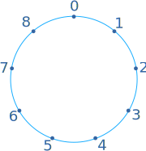
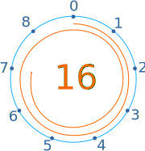
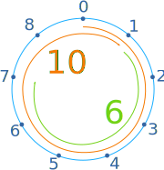
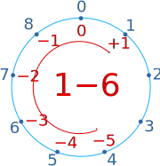

Digital Root
The Digital Root is the sum of the individual digits of a number, repeating this process until we get a one-digit result.
Example: 25
Sum the digits of 25: 2 + 5 = 7
Answer: the digital root of 25 is 7
Example: 3456
Sum the digits of 3456: 3 + 4 + 5 + 6 = 18
But 18 has two digits, not one! So let's repeat the process.
Sum the digits of 18: 1 + 8 = 9
Answer: the Digital Root of 3456 is 9
We always end up with a number between 0 and 9.
Useful
The digital root is useful as it helps us check the accuracy of our arithmetic, and can also check divisibility by 3 and 9.
Check Addition
Try adding the digital roots, their sum should also be correct:
Example: 1234 plus 411
| Sum | Digital Root | ||
| 1234 | 1+2+3+4=10 → 1+0 = 1 | 1 | |
| + 411 | 4+1+1 = 6 | + 6 | |
| 1645 | 1+6+4+5=16 → 1+6 = 7 | 7 |
After doing the sum 1234+411=1645, check to see that the sum of the digital roots works out fine too. If it doesn't you must have made a mistake somewhere!
This also works when adding long lists of numbers.
Check Subtraction
Same idea but using subtraction:
Example: 1234 minus 411
| Sum | Digital Root | ||
| 1234 | 1+2+3+4=10, 1+0 = 1 | 1 | |
| − 411 | 4+1+1 = 6 | − 6 | |
| 823 | 8+2+3=13, 1+3 = 4 | −5 |
Hang on ... minus 5? OK, when we get a negative digital root we can add 9
So −5 + 9 = 4, and it checks nicely.
Why did we add 9? Well the reason all this works is that 9 is the key number because it is one less than 10 (the basis of our decimal number system).
Casting Out 9s
In fact the method we are using is sometimes called "casting out 9s": we are, in effect, casting out (getting rid of) all whole multiples of 9.
Example: The digital root of 123
123 is also 1×100 + 2×10 + 3
Which is also 1×(99+1) + 2×(9+1) + 3×1
Which can be rearranged into 1×99 + 2×9 + 1×1 + 2×1 + 3×1
Ignoring all the multiples of 9 we get 1×1 + 2×1 + 3×1 = 1+2+3 = 6
A Circle Explains It
It is like we don't care how many times we go around, just where we end up.
Example: The digital root of 16
Here is a circle with 9 points (0,1,2,3,4,5,6,7,8):

16 goes once around, then ends up at 7:

Or this way: 10 (which ends at 1) followed by 6, or just "1 + 6 = 7"

Notice:
- 10 goes once around and ends at 1
- 20 goes twice around and ends at 2
- 30 goes three times around and ends at 3, etc
Likewise:
- 100 goes 11 times around and ends at 1
- 200 ends at 2
- 300 ends at 3
So we can just add up the digits to find where we end up!
Play with it here:
Going Backwards
Remember earlier when we had "1−6 = −5" and we added 9 to get 4 ?
Well the circle explain how "−5" is the same as "4" :

So the digital root is all about "where do we end up on the circle" and we ignore how many times we go around.
Read about the Modulus Operation to find out more.
Shortcuts
In fact there is a simple shortcut: find any digits that add up to 9 (one full rotation), and just ignore them!
Example: The digital root of 453
4+5 is 9, so ignore them. So the digital root of 453 is simply 3
Example: The digital root of 13331
Three 3's make 9, so ignore them. So the digital root of 13331 is 1+1=2
Multiplication
We can also use digital roots to check Multiplication!
Example: 345 times 107
| Sum | Digital Root | ||
| 345 | Ignore 4+5: | 3 | |
| × 107 | 1+7=8: | × 8 | |
| 36915 | (Ignore 3+6 and 9) 1+5=6: | 24 |
The digital root of 24 is 2+4=6, which matches the digital root of 36915. Yay!
Division
Oh this is way too hard for me, you work it out!
Decimals
And we can find the digital root of decimals, too:
Example: The digital root of 0.125
1+2+5 = 8
Example: 0.125 plus 0.125
0.125 + 0.125 = 0.25
Digital roots give us:
- 8 + 8 = 16, and 1+6 = 7,
- which matches the digital root of 0.25: 2+5 = 7
So we probably got that sum correct!
Divisibility
Digital roots also help us check Divisibility (after dividing one number by another do we get a whole number answer) for both 3 and 9.
Divisible by 9
Can we divide a number by 9 and get a whole number result? Only when the digital root is 9.
Example: is 709 divisible by 9?
Sum the digits: 7+0+9 = 16, repeat for 16: 1 + 6 = 7
Answer: NO, 709 is not divisible by 9
(Check: 709/9 = 7879, not a whole number)
Example: is 5436 divisible by 9?
Sum the digits: 5+4+3+6 = 18, repeat for 18: 1 + 8 = 9
Answer: YES, 5436 is divisible by 9
(Check: 5436/9 = 604 exactly)
Divisible by 3
Can we divide a number by 3 and get a whole number result? Only when the digital root is a multiple of 3.
Example: is 428 divisible by 3?
Sum the digits: 4+2+8 = 14, repeat for 14: 1 + 4 = 5
Answer: NO, 428 is not divisible by 3
(Check: 428/3 = 14223, not a whole number)
Example: is 1725 divisible by 3?
Sum the digits: 1+7+2+5 = 15, repeat for 15: 1 + 5 = 6
Answer: 6 is a multiple of 3, so YES, 1725 is divisible by 3
(Check: 1725/3 = 575 exactly)
Puzzle Your Friends
Ask them "what is going on with this?"
- 3 × 3 = 0
- 3 + 3 = 6
- 3 + 6 = 0
- 5 + 5 = 1
Other Bases
If Dogs ruled the world they might use base-8 instead of decimal, so they would "cast out 7s" instead!